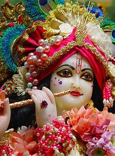
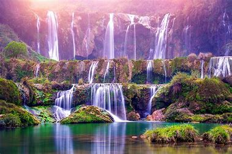

Sample Images
 
Cristiano Ronaldo dos Santos Aveiro GOIH ComM(Portuguese pronunciation: born 5 February 1985) is a Portuguese professional footballerwho plays as a forward for and captains both Saudi Pro League club Al Nassr and the Portugal national team. Widely regarded as one of the greatest players of all time, Ronaldo has won five Ballon d'Or awards,[note 3] a record three UEFA Best Player in Europe, and four European Golden Shoes, the most by a European,He has won 33 trophies in his career ,including seven league titles, five UEFA Champions Leagues, the UEFA European Championship and the UEFA Nations League. Ronaldo holds the records for most appearances (183), goals (140) and assists (42) in the Champions League, goals in the European Championship (14), international goals (123) and international appearances (201). He is one of the few players to have made over 1,100 professional career appearances, and has scored over 850 official senior career goals for club and country, making him the highest goalscorer of all time.The most famous nickname which is widely used to call the greatest goalscorer, is Cr7 This is like an acronym of Cristiano Ronaldo 7 (Jersey No. 7). Many fans and football pundits call him 'GOAT' which means 'Greatest of All Time